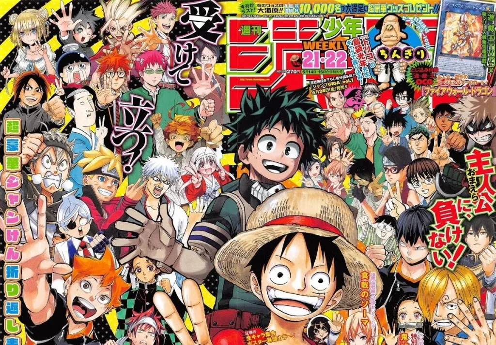
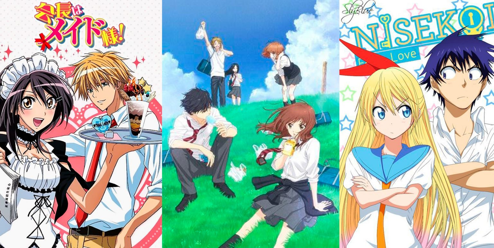
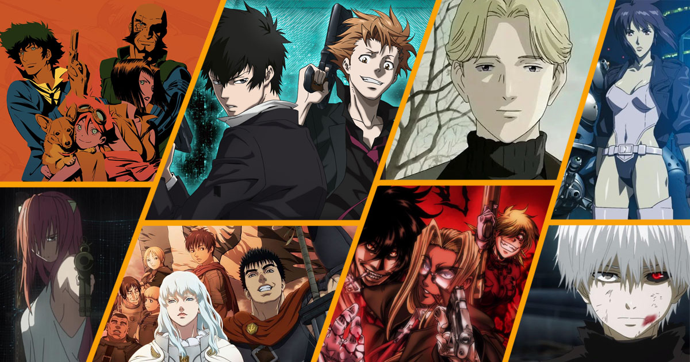
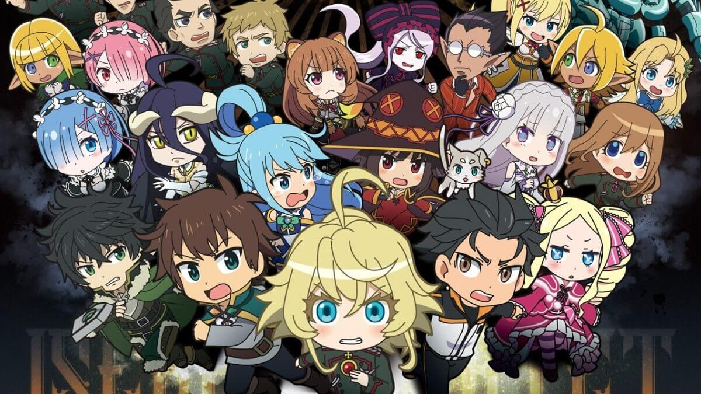
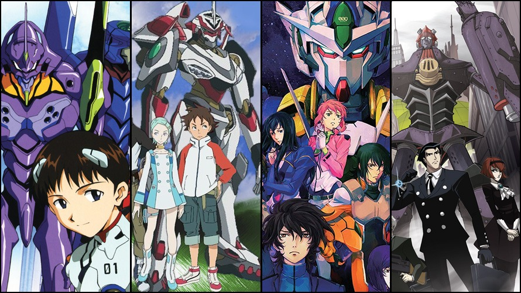
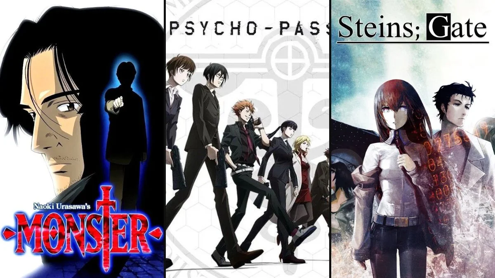
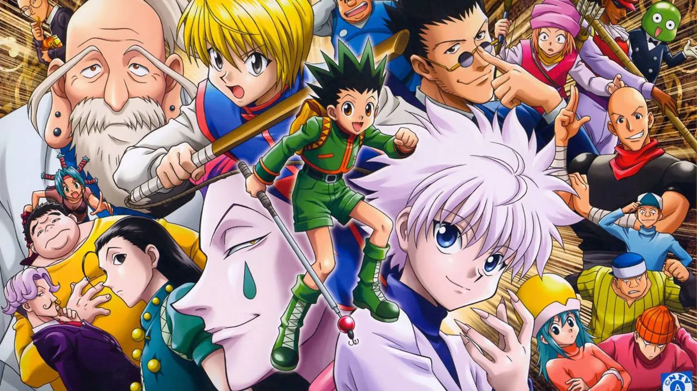
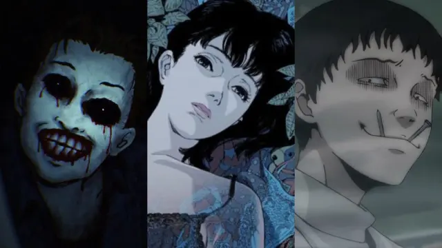

12件のジャンルを表示
該当するジャンルはありません
このカテゴリにはジャンルがありません。別のフィルターをお試しください。

少年 · 若者向け
Shōnen
最も人気のあるアニメジャンル。限界を超えて成長し、仲間を作り、ますます強力な敵に立ち向かう若い主人公たち。
詳細を見る →⚔️ Shōnen
対象読者
12〜18歳の少年少女。ただし人気は全年齢層にわたる。
サブジャンル
代表作
- ドラゴンボール (1986) — 鳥山明
- NARUTO -ナルト- (2002) — 岸本斉史
- 僕のヒーローアカデミア (2016) — 堀越耕平
- 鬼滅の刃 (2019) — 吾峠呼世晴

少女 · 少女向け
Shōjo
人間関係、感情、成長に焦点を当てた物語。視覚的に美しく、表現力豊かな瞳とパステル調の色彩が特徴。
詳細を見る →🌸 Shōjo
対象読者
12〜18歳の少女。大人にも人気。
サブジャンル
代表作
- 美少女戦士セーラームーン (1992) — 武内直子
- カードキャプターさくら (1998) — CLAMP
- フルーツバスケット (2001/2019) — 高屋奈月
- NANA (2006) — 矢沢あい

青年 · 成人男性向け
Seinen
よりダークで複雑、哲学的なテーマを扱う大人向けアニメ。容赦のない暴力、政治、心理、道徳的曖昧さ。
詳細を見る →🔪 Seinen
対象読者
18〜40歳の成人男性。成熟した内容で、ハッピーエンドが保証されていない物語。
サブジャンル
代表作
- ベルセルク (1997) — 三浦建太郎
- 攻殻機動隊 (1995) — 押井守
- ヴィンランド・サガ (2019) — 幸村誠
- MONSTER (2004) — 浦沢直樹
女性 · 成人女性向け
Josei
成人女性を対象とした恋愛と人生の物語。少女より現実的で感情的に成熟しており、複雑な関係性と背景のあるキャラクター。
詳細を見る →💐 Josei
対象読者
18〜40歳の成人女性。感情的なリアリズムと大人の関係性に重点を置く。
サブジャンル
代表作
- ちはやふる (2011) — 末次由紀
- NANA (2006) — 矢沢あい
- Paradise Kiss (2005) — 矢沢あい
- ハチミツとクローバー (2005) — 羽海野チカ

異世界 · 別世界
Isekai
主人公が自分の世界とは異なる世界に転送、転生、または閉じ込められる。過去10年で最も急成長しているジャンル。
詳細を見る →🌀 Isekai
主な特徴
主人公が別の世界に移動し、しばしば特別な力や元の世界での有利な知識を持つ。
バリエーション
代表作
- ソードアート・オンライン (2012) — 川原礫
- Re:ゼロから始める異世界生活 (2016) — 長月達平
- オーバーロード (2015) — 丸山くがね
- 無職転生 (2021) — 理不尽な孫の手

メカ · 巨大ロボット
Mecha
人間が巨大ロボットを操縦し、大規模な脅威に立ち向かう。純粋な娯楽から戦争と人間性に関する哲学的寓話まで。
詳細を見る →🤖 Mecha
二つの主要な流れ
スーパーロボット: 特殊能力を持つ幻想的なロボット（マジンガーZ）。 リアルロボット: 政治的な含意を持つ現実的な軍事兵器（ガンダム）。
サブジャンル
代表作
- マジンガーZ (1972) — 永井豪
- 機動戦士ガンダム (1979) — 富野由悠季
- 新世紀エヴァンゲリオン (1995) — 庵野秀明
- 天元突破グレンラガン (2007) — GAINAX

日常 · 日常生活
Slice of Life
普通のキャラクターたちの普通の生活を描く物語。大げさな戦いも魔法の力もない — ただ日常の重みと美しさだけ。
詳細を見る →☕ Slice of Life
ジャンルの本質
小さな瞬間の美しさを描く：友人との午後、新学期の初日、料理を作ること。対立は感情的であり、物理的ではない。
よく組み合わされる要素
代表作
- CLANNAD (2007) — Key / 京都アニメーション
- けいおん！ (2009) — かきふらい
- 3月のライオン (2016) — 羽海野チカ
- ばらかもん (2014) — ヨシノサツキ

心理 · 心理的
Psychological
真の戦場は心の中。知的な駆け引き、断片化したアイデンティティ、それまで見てきたすべてを再構成する結末。
詳細を見る →🧠 Psychological
物語技法
信頼できない語り手、非線形の時間軸、キャラクター/影の二重性、知覚された現実の崩壊。
サブジャンル
代表作
- DEATH NOTE (2006) — 大場つぐみ
- 妄想代理人 (2004) — 今敏
- Serial Experiments Lain (1998)
- メイドインアビス (2017) — つくしあきひと

スポーツ · スポーツ
Sports
スポーツを通じた自己向上。チームワーク、伝説的なライバル関係、そして実際のスポーツを観戦しない人々でさえも情熱を燃やす瞬間。
詳細を見る →🏆 Sports
ジャンルの鍵
成長の比喩としてのスポーツ。ライバルは主人公と同じくらい重要 — 誰も一人で頂点に立てない。
描かれるスポーツ
代表作
- ハイキュー!! (2014) — 古舘春一
- 黒子のバスケ (2012) — 藤巻忠俊
- ブルーロック (2022) — 金城宗幸
- はじめの一歩 (2000) — 森川ジョージ

魔法少女 · 魔法少女
Mahō Shōjo
愛するものを守るために魔法の力を得る少女たち。80年代の無邪気なファンタジーから現代のダークな脱構築まで。
詳細を見る →✨ Mahō Shōjo
ジャンルの進化
無邪気なファンタジーとして誕生（ひみつのアッコちゃん、1969年）。2011年にまどか☆マギカが魔法の契約の背後にある恐ろしさを描き、根本的に脱構築した。
特徴的な要素
代表作
- 美少女戦士セーラームーン (1992) — 武内直子
- カードキャプターさくら (1998) — CLAMP
- 魔法少女まどか☆マギカ (2011)
- プリキュアシリーズ (2004–現在)

冒険 · 冒険
Adventure
未知への壮大な旅。世界は広大で、危険は現実的であり、各ストーリーアークは構築された宇宙の新たな層を明らかにする。
詳細を見る →🗺️ Adventure
ジャンルを定義するもの
精巧な世界観、長い旅、主人公とともに成長する仲間たち。目的地と同じくらい旅路が重要。
よく組み合わされる要素
代表作
- ONE PIECE (1999) — 尾田栄一郎
- HUNTER×HUNTER (1999) — 冨樫義博
- 鋼の錬金術師 FULLMETAL ALCHEMIST (2009)
- マギ (2012) — 大高忍

超自然 · 超自然
Supernatural
神、悪魔、精霊、そして説明不可能なものが日常世界と共存する。神道と日本の民間伝承に深く根ざしている。
詳細を見る →👻 Supernatural
文化的ルーツ
日本の民間伝承 — 妖怪、鬼、神 — はこのジャンルの尽きることのない源泉。人間の世界と霊的な世界の境界は常に曖昧。
バリエーション
代表作
- 呪術廻戦 (2020) — 芥見下々
- ノラガミ (2014) — あだちとか
- 夏目友人帳 (2008) — 緑川ゆき
- モノノ怪 (2007) — 東映アニメーション